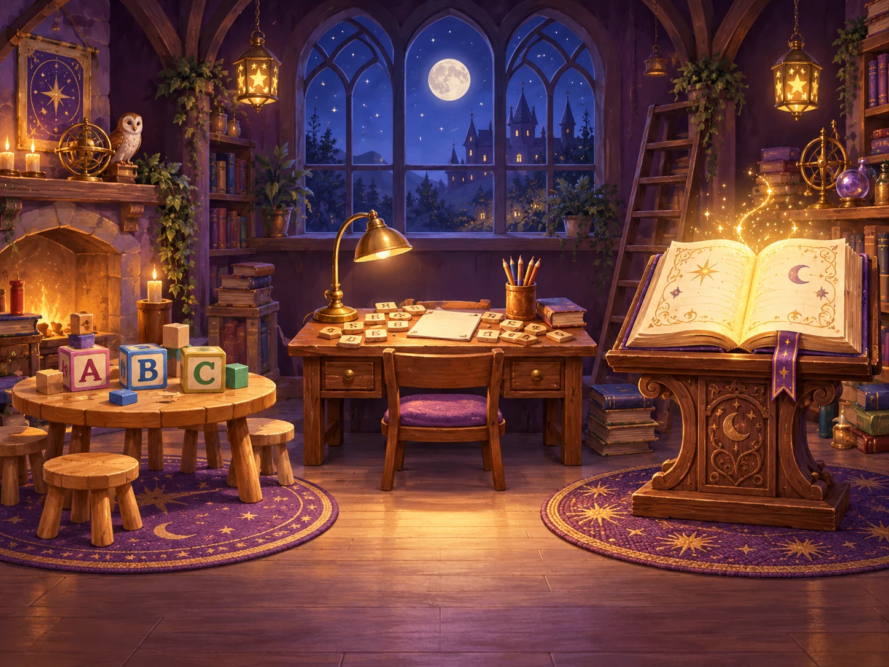
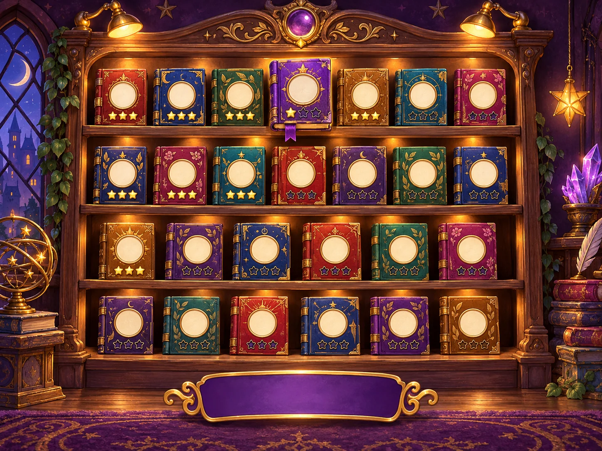
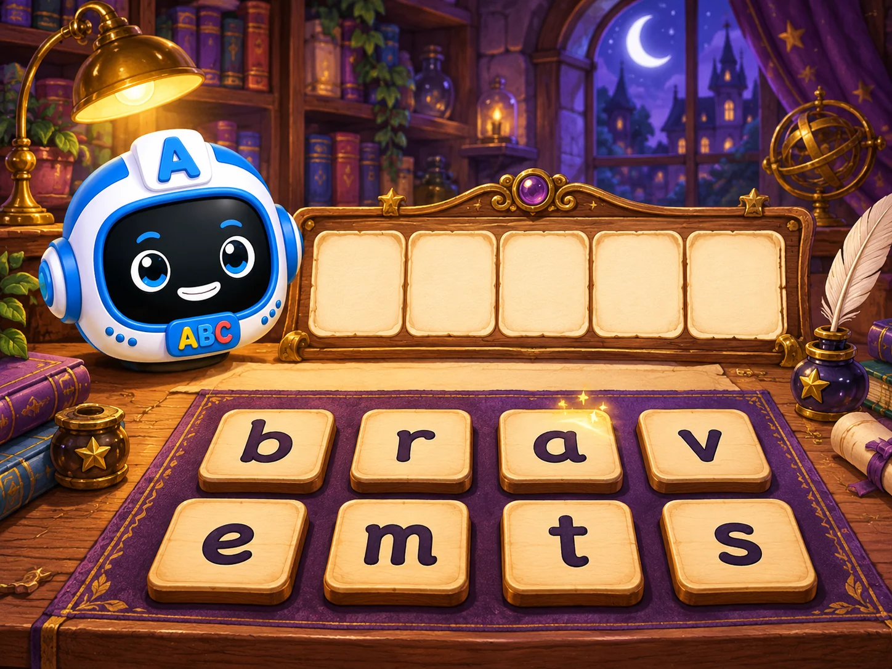

Enchanted Spelling Workshop
Magic Spelling becomes a violet-and-gold room inside Our Word Book: children choose a recognisable learning station, continue from an orderly shelf, and spell at a warm illustrated writing desk. The existing 729 words, British spellings, narration, mechanics, rewards, saves and offline behaviour stay intact.
Recognisable grades
Alphabet Table · Word-Building Desk · Magical Spellbook
Alphabet Table · Word-Building Desk · Magical Spellbook
Honest progress
Packs completed and stars earned, never a many-star total squeezed into three icons
Packs completed and stars earned, never a many-star total squeezed into three icons
Purposeful motion
Only the chosen book, tapped robot, answer tile or earned reward moves
Only the chosen book, tapped robot, answer tile or earned reward moves



Recommended owner decisions
- Use paged shelves: 9 packs per page for Grades 1–2 and four even 7-pack pages for Grade 3.
- Continue the useful practice: first unplayed pack; once all are attempted, earliest lowest-star pack.
- Keep earned rewards recognisable: translate flowers and bouquets into pressed flowers in a workshop drawer.
- Commission portrait compositions where interaction matters: dedicated portrait art for grade selection and gameplay; crop-safe variants for shelves and completion.
- Show both names: “Grade 1” plus “Alphabet Table”, so the object helps pre-readers and the grade helps school/parent orientation.